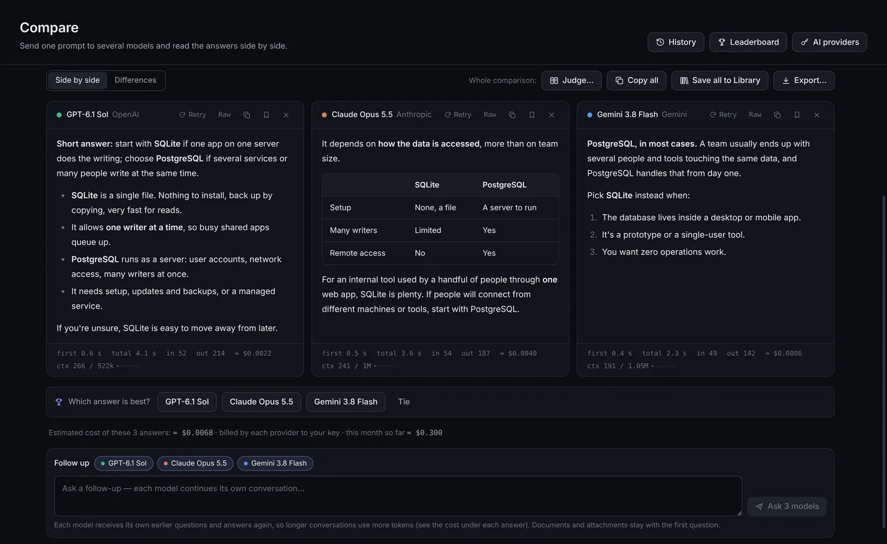
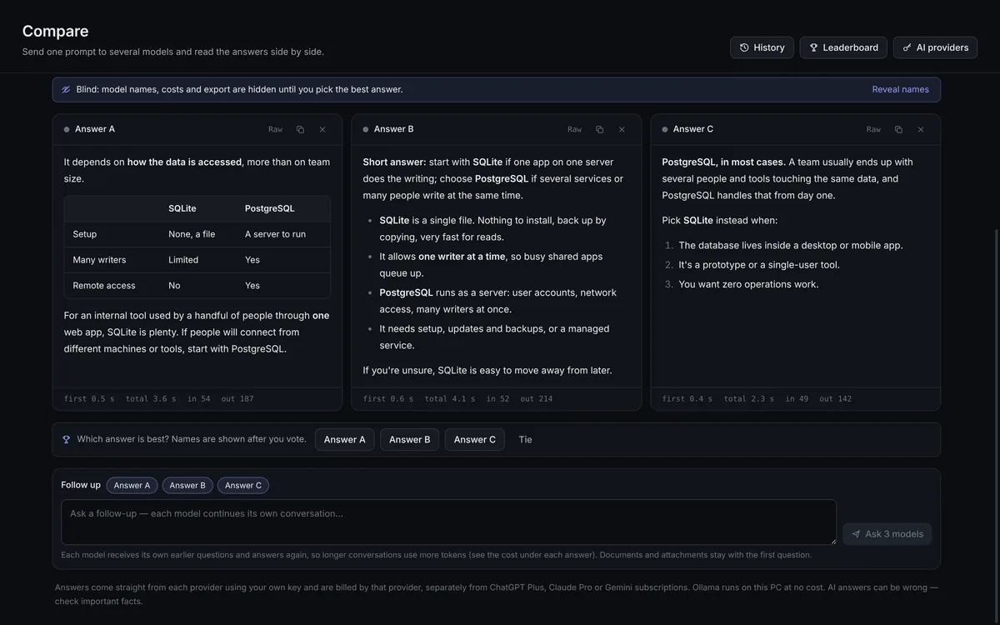
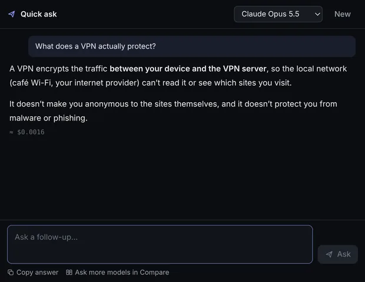
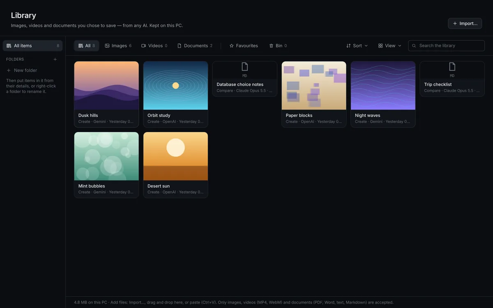

Welcome to sAInmore
One workspace. Every AI.
One question, several answers, side by side. A Windows app for people who use more than one AI. Open the official AI websites in split screen, or ask several models the same question at once and compare what they say. Free beta


Two ways to use several AIs at once
Use the AI websites you already pay for, or connect your own API keys. Or both. Neither is required to start.
The AI websites, in split screen
Open the official sites in tabs and see 2 to 8 of them at once, side by side or in a grid. Drag the dividers to resize.
- Built in: ChatGPT, Claude, Gemini, Copilot, Perplexity, Le Chat, DeepSeek and Grok.
- Add more from a reviewed list of AI services.
- Each service keeps its own sign-in, inside the app.
- Use voice mode on the AI websites. Each site asks before it can use your microphone.
- Pick a split-screen layout with one click, at the top right.
- Close a tab with the × in its toolbar, as in a browser. Ctrl+Shift+T brings it back.
- Tabs you haven’t used for 30 minutes sleep to free memory, and reload when you click them.
- Go full screen with one click (the button at the top right): the AI websites side by side, nothing else on screen. Move the mouse to the left edge for the sidebar.
AI Lab: compare through the official APIs
Type one question and send it to several models together, using your own keys for OpenAI, Anthropic, Google Gemini, Mistral, xAI (Grok), DeepSeek, Groq, Moonshot (Kimi), Perplexity or Xiaomi MiMo, or free local models through Ollama or LM Studio. You can also add up to five servers of your own in OpenAI’s format, such as OpenRouter or a company server. The app says where each provider keeps your data.
- Answers stream in side by side, with a differences view.
- Ask follow-up questions; each model keeps its own conversation, and you choose whether to send all of it, the last 5 turns or just the new question. Quote part of an answer to ask about it.
- Blind vote: pick the best answer before you see who wrote it, and build your own leaderboard.
- Combine the answers into one: a model you pick sorts what they agree on, where they contradict each other, and what only one covers or none did, with each point linked to its answer. The app labels it “not fact-checked”.
- Challenge: select a sentence in an answer and that model says whether it stands by it and revises its answer. Or have every model check the others’ answers, without their names, and revise its own, with a report of what changed and what is still disputed. Models agreeing doesn’t make them right.
- Workflows: chain up to four steps and a report. Each step asks one or more models or compares their answers; before each one you see what it sends, to which company and the estimated cost, and it runs only when you click. Add your files or use My documents: a step can take them whole, only the passages that match it, or notes from a first “Read the documents” step that can run on this PC, and it warns you before sending if they won’t fit. A second opinion sends a finished step to another model, side by side, and you choose which answer passes on. Start from seven templates or your own, and save the report to the Library, or as Markdown, PDF, Word or PowerPoint.
- A thinking level per model, an optional AI judge, cost estimates, and a gauge showing how full each model’s context is.
- A Usage screen with tokens and estimated cost per model and per day, and this month’s estimated spending in the sidebar. Every call is counted on this PC, also with History off (numbers only), and an optional monthly limit warns you and asks before a call that would go over it.
- Export any comparison as a PDF, Markdown or JSON file.
- Web search and built-in tools when you want them.






And more
Assistants
Set one up once and start it in one click (Ctrl+8): its instructions, up to four models, blind answers, web search, tools and documents, a greeting and starter questions. Write with AI drafts the instructions, and Refine prompt suggests changes. Begin from 41 templates in nine groups, from Writing and Code to Lifestyle and wellbeing; adding one picks models from your own keys. Templates are general help, not medical, financial or legal advice.
Prompts, written and improved with AI
Describe a task, and a model you choose writes a reusable prompt with blanks. Or improve your own: both side by side, with each change and its reason. Use your API models or a free local model; nothing is sent until you press the button. Plus starter prompts, a guided builder, short guides and tips as you type.
Translator and Summariser
Translate with any of your models, free and private with one on your PC. Paste a web address to read a summary, then ask about the page. On a web page in the Workspace, Summarise reads the page you have open.
Colours
18 colour themes and 8 background colours, in light and dark.
Quick ask
Press a hotkey in any app to ask one model a quick question in a small window. Or copy some text and press a second hotkey to ask about it, translate, summarise or explain it.
Create
Five tabs, with your own keys: images up to 8K from OpenAI, Gemini or xAI, side by side; documents (PDF, Word, Excel, PowerPoint); code and web pages; speech with Gemini; and video clips with xAI or Gemini, with a cost limit per clip. Gemini images and video need a key with billing turned on.
Library
Keep the images, videos and documents you get from AI in one place, with folders and tags.
Workspaces
The Workspace holds AI work, Web, Dev and Gaming, plus up to five of your own, each with its own tabs and split screen (Ctrl+Shift+1…9). AI work holds AI services only; the others open any https website. Dev also opens your own projects on this PC, and in Gaming a browser game can capture the mouse (Esc gives it back). Type an address, or words to search with DuckDuckGo. Check the address bar before you sign in.
Projects and History
File your work by project, from the top of the sidebar. Every comparison and workflow run is saved and searchable. You can import your ChatGPT and Claude chat exports too. Star and tag comparisons, and delete old ones automatically if you want (starred ones are kept).
Documents
Ask a model about your own files and see which passage each point comes from, find exact words without AI, or run ready tasks such as Summarise, Merge or Research. Each file shows a preview of its text. Optional search by meaning runs on your PC.
Voice
Voice typing in every text box (a small mic, or Ctrl+Shift+Space) with a Whisper model that runs locally, and answers read aloud with Windows voices.
Backup and sync
Back up and restore your data, and sync it, encrypted, between your own PCs.
Code preview
Open HTML and SVG code from an answer in a sealed, offline preview window.
One-click updates
When a new version is out, click Update now, then Restart to update. Your data stays. The download is checked against GitHub’s copy, and nothing installs until you click.
Features page and tour
Every feature in one searchable list (F1), and a skippable one-minute tour after installing. Ctrl+K finds any screen, setting, prompt, comparison or document on your PC.
Your data is stored on your PC
- Your history, library, prompts and documents are stored on your PC. If you turn on Sync, encrypted copies also go to a sync folder you choose. There’s no sAInmore account and no sAInmore server.
- No telemetry, no tracking, no ads.
- API keys are encrypted by Windows and only sent to the provider they belong to.
- The app checks GitHub for a new version when it starts and every 6 hours while it runs. Nothing is downloaded or installed until you click Update now. You can turn the automatic check off in Settings → About.
- Feedback is only sent when you choose to send it.
- It uses the official AI websites and official APIs, or a server you add yourself. It doesn’t scrape websites or type into them for you; the Summariser reads only a page you ask it to. Other websites open only in the Web, Dev, Gaming or your own workspaces, when you choose them.
When you use an AI service, what you send goes to that service under its own terms. Full privacy notice
Download Free beta
For Windows 10 and 11, 64-bit (tested on Windows 11). The installer is on the release page on GitHub.
sAInmore-Setup-0.8.17.exe
Installer
Installs sAInmore for your Windows account, without admin rights, with Start menu and desktop shortcuts. Later versions can install with one click from inside the app.
Updating? Windows Smart App Control may block updating from inside the app until the app is code-signed: then download the new version from this page. A backup first is always a good idea (Settings → Your data).
Windows will show a warning. Here’s why.
sAInmore isn’t code-signed yet. Code signing costs money each year and the app is a free beta. Because of that, Windows SmartScreen shows “Windows protected your PC” the first time you run it. To continue:
- Click More info.
- Check that the file name is
sAInmore-Setup-…exe. - Click Run anyway.
Only download sAInmore from the GitHub link on this page.
Questions
Do I need API keys?
No. The AI websites work with your normal sign-ins, including free accounts and subscriptions you already have.
API keys are only needed for AI Lab, Quick ask, Create, the Translator and Summariser, and writing prompts with AI. You can also use AI Lab, Write with AI and the Tools with free local models through Ollama or LM Studio, without any key.
Does my ChatGPT Plus or Claude Pro subscription cover the API?
No. Website subscriptions and API billing are separate. AI Lab and Quick ask use your own API keys, and each provider bills you directly. sAInmore shows an estimated cost under each answer; your provider’s billing page has the exact amount.
Is it free?
Yes, sAInmore is free during the beta. The only costs are the ones you choose: AI subscriptions and API usage, paid to the providers.
Why does Windows warn me when I run it?
Because the app isn’t code-signed yet. Click More info, then Run anyway. More about this.
Why didn’t Update now install the new version?
Windows Smart App Control, or another security setting, can block programs that aren’t code-signed, and sAInmore isn’t signed yet. From 0.8.10 the app tells you when this happens; earlier versions just show “Update failed”. Either way, click Download page and install the new version from there. Your data stays.
What happened to the portable version?
It’s retired from version 0.8.2, because it couldn’t update itself. If you used it, install with Setup: it uses the same data folder, so everything is still there.
Does sAInmore read or send messages on the AI websites?
No. The websites run in their own isolated windows inside the app. sAInmore doesn’t read what’s on them, type into them or send for you. To ask several models automatically, AI Lab uses the providers’ official APIs, or a server you add yourself.
Which AI services can I add?
In AI work, only AI services: the eight built-in ones, plus services from a reviewed list in the app. Other websites open in the other workspaces (Web, Dev, Gaming and your own), each with its own tabs and sign-ins.
Is there a Mac or Linux version?
Not at the moment. sAInmore is for Windows 10 and 11, 64-bit.
Wasn’t it called brAInsphere?
Yes, until October 2026. Installing sAInmore over brAInsphere keeps your data, settings and website sign-ins.
How do I report a problem or suggest something?
Use Feedback in the app’s Menu, at the bottom of the sidebar. You decide what to include, and nothing is sent until you choose to send it.